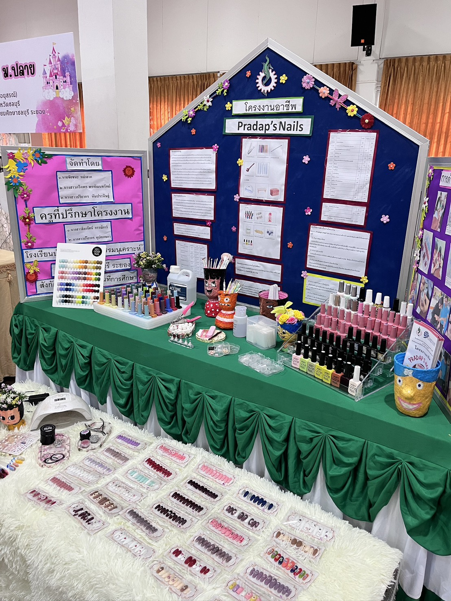
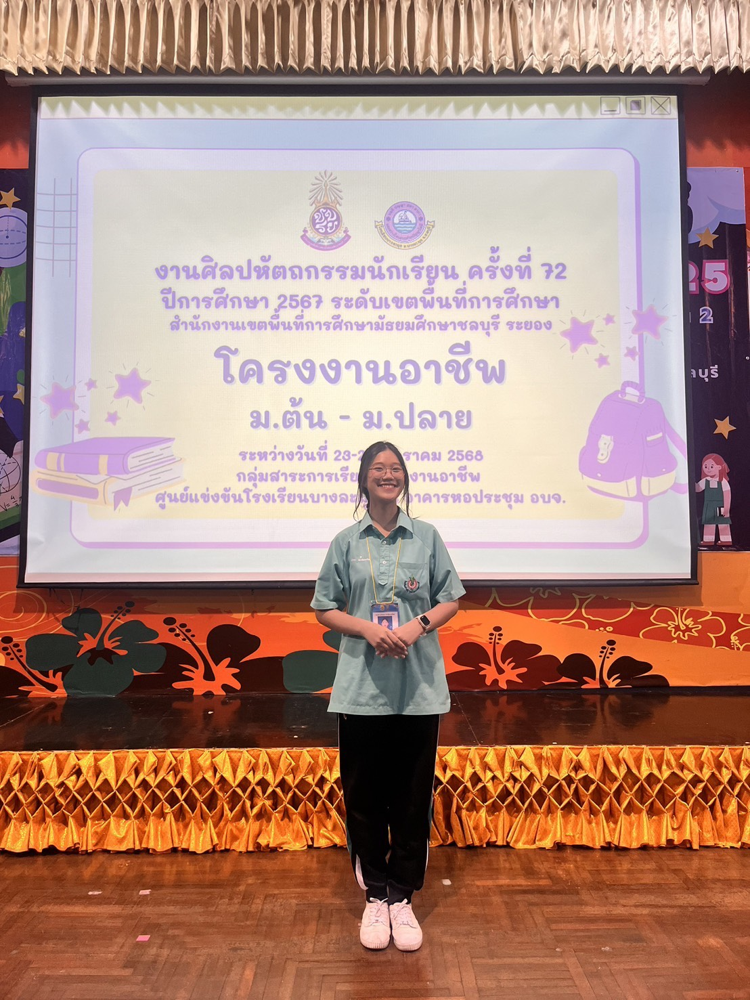
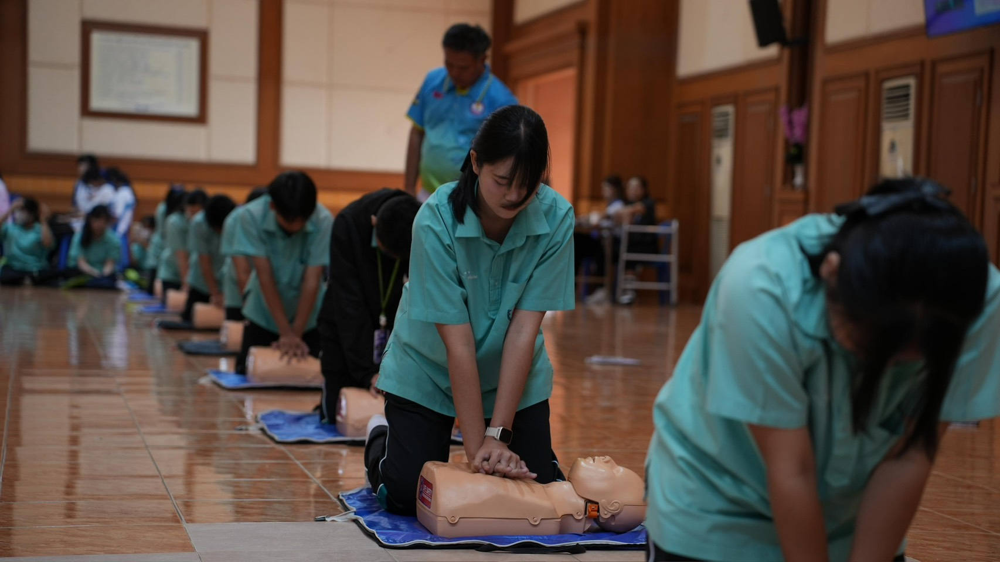
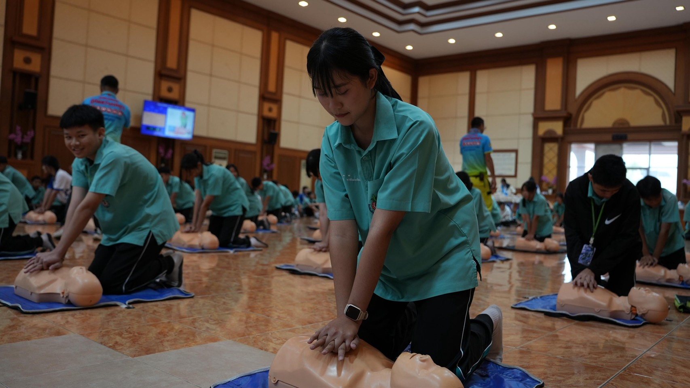
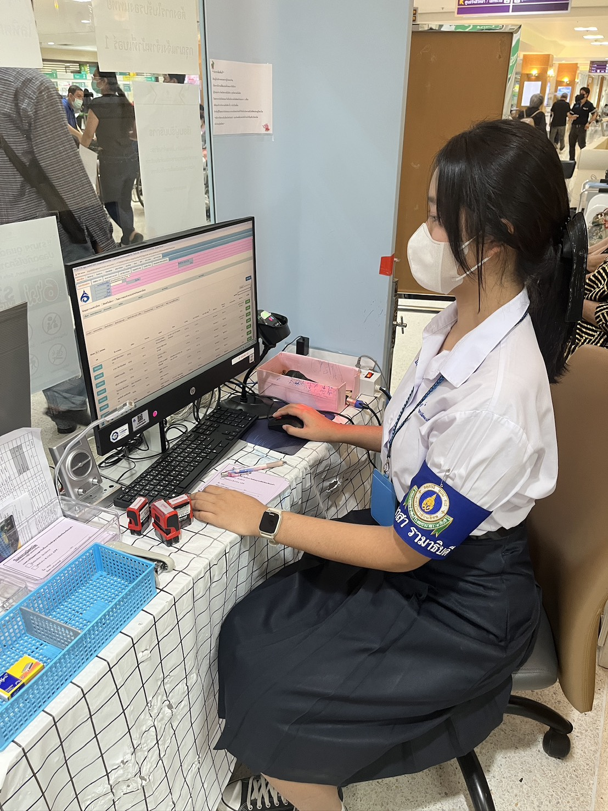
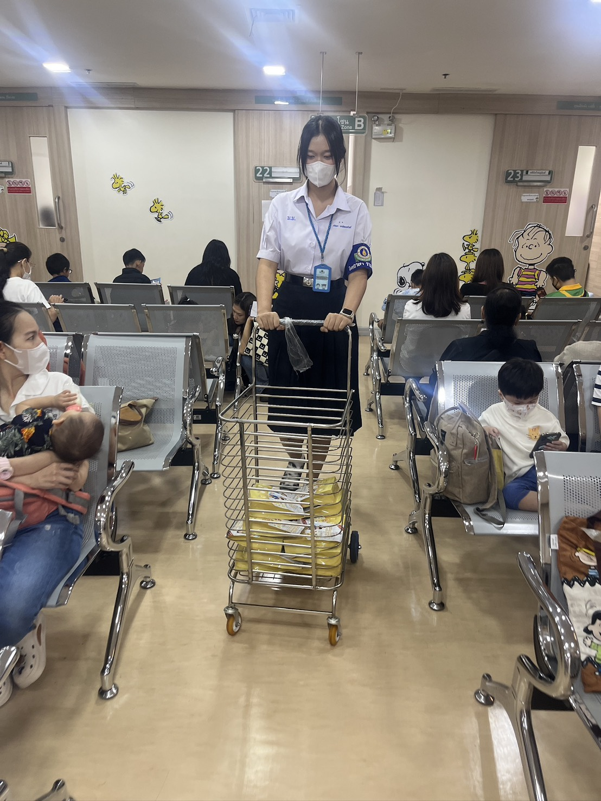
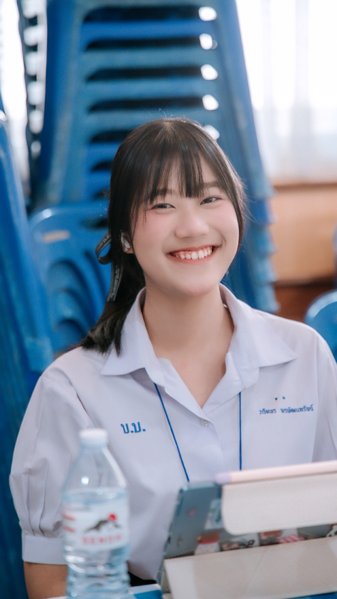
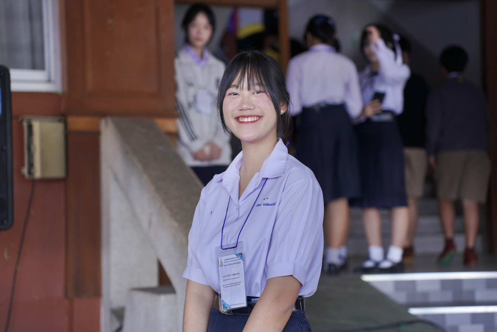

สวัสดีครับ/ค่ะ [ชื่อ-นามสกุล]
นักเรียนผู้มีความสนใจในด้าน [สาขา/คณะที่สมัคร]
นักเรียนผู้มีความสนใจในด้าน [สาขา/คณะที่สมัคร]
ชื่อ-นามสกุล: [ชื่อ-นามสกุล]
โรงเรียน: [ชื่อโรงเรียน]
แผนการเรียน: [เช่น วิทยาศาสตร์-คณิตศาสตร์]
คติประจำใจ: "[ข้อความหรือเป้าหมายของคุณ]"


รางวัลระดับเหรียญทอง | สพม.ชลบุรี ระยอง
ได้รับรางวัลระดับเหรียญทอง กิจกรรมการประกวดโครงงานอาชีพ ระดับชั้น ม.4 - ม.6 ระดับสำนักงานเขตพื้นที่การศึกษา (23 - 24 มกราคม 2568)
ดูเกียรติบัตร / รายละเอียด

โรงพยาบาลบ้านบึง ร่วมกับ โรงเรียนบ้านบึง "อุตสาหกรรมนุเคราะห์"
ผ่านการอบรมเชิงปฏิบัติการ ในหัวข้อ การปฐมพยาบาลฉุกเฉินและการกู้ชีพขั้นพื้นฐาน (Emergency First Aid and basic life support training) ประจำปีการศึกษา 2568 (17 มกราคม 2569)
ดูเกียรติบัตร / รายละเอียด

คณะแพทยศาสตร์โรงพยาบาลรามาธิบดี มหาวิทยาลัยมหิดล
ได้เข้าร่วมกิจกรรมจิตอาสารามาธิบดี (๑๖ ชั่วโมง) ระหว่างวันที่ ๑๙ - ๒๐ เดือนมีนาคม พ.ศ. ๒๕๖๙ ณ โรงพยาบาลรามาธิบดี
ดูเกียรติบัตร / รายละเอียด

งานศิลปหัตถกรรมนักเรียน ครั้งที่ 73 | สพม.ชลบุรี ระยอง
ปฏิบัติหน้าที่คณะกรรมการประจำห้องรับรองครูผู้ควบคุมทีมการแข่งขัน ศูนย์การแข่งขันกิจกรรมคอมพิวเตอร์ (19 - 23 มกราคม 2569)
ดูเกียรติบัตร / รายละเอียดEmail: your.email@example.com
Phone: 08X-XXX-XXXX